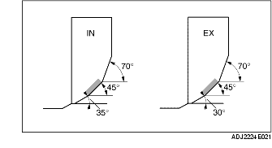

VALVE SEAT INSPECTION/REPAIR
B3E011010280E01
1. Measure the contact width of the valve face and the valve seat using the valve lapping compound (red lead).
-
• If not within the specification, resurface the valve seat using the 45° valve seat cutter or resurface the valve face, or the both.

-
Standard valve seat contact width
-
0.8-1.4 mm {0.032-0.055 in}
2. Verify that the valve seating position is at the center of the valve face.
-
• If the seating position is too high, correct the valve seat using a 70° (IN) 70° (EX) valve seat cutter, and a 45° valve seat cutter.
-
• If the seating position is too low, correct the valve seat using a 35° (IN) 30° (EX) valve seat cutter, and a 45° valve seat cutter.
3. Check the valve seat for sinking. Measure the protruding length (dimension L) of the valve stem using a valve of standard length.
-
• If it exceeds the specification, replace the cylinder head.
-
Standard valve seat sinking
-
39.29 mm {1.5468 in}